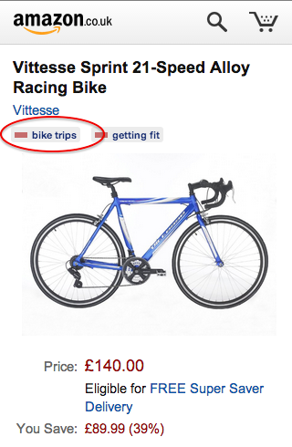
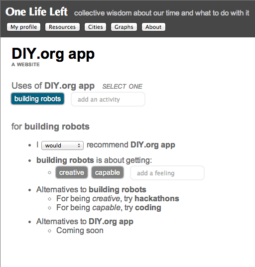
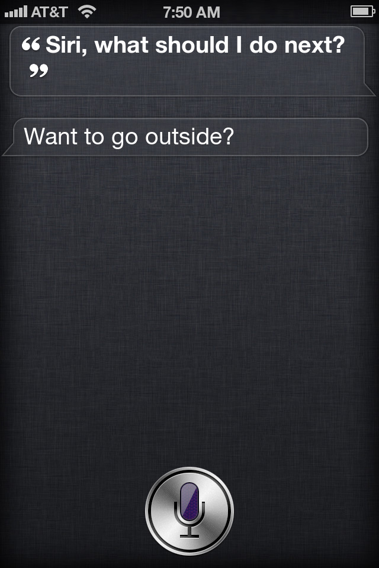
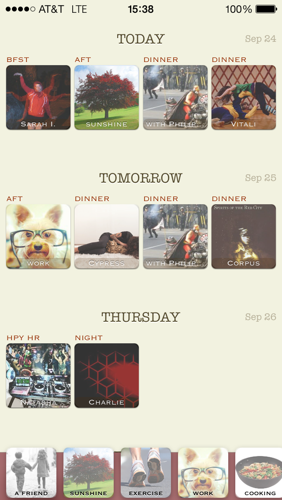
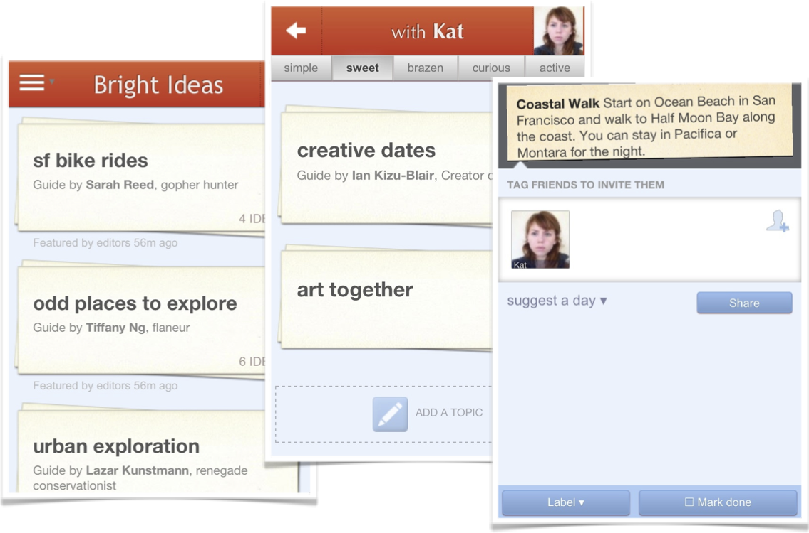
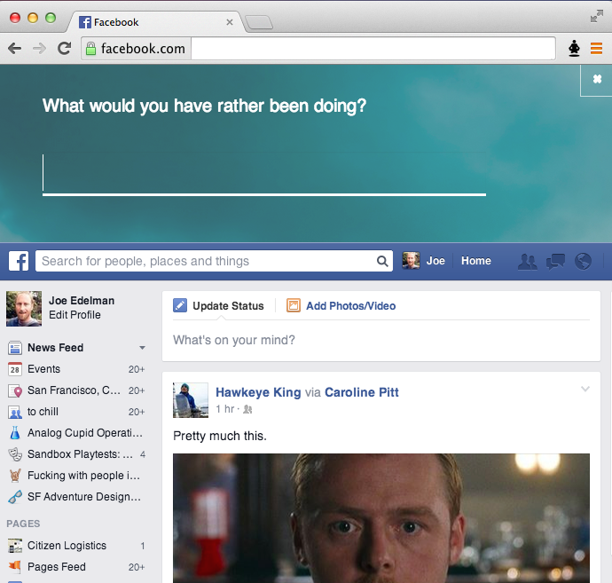

Many of us have come to regret certain hours spent on our phones or our computers. Certainly we've all bought things that we didn't end up using. Could the device that mediated the choice have done us a solid and warned us? Could it have surfaced information to help us choose better? We'll first look at how costs and benefits are currently conveyed, and then turn to a new appoach to informing users about the choices available on and off-screen. Finally we'll look at the social benefits of moving from a society of marketing-driven consumption to one of where informed choice is available. ## Costs First lets consider *direct costs*, often denominated in dollars or hours. Products are often listed with their prices, and we consider it a bad business practice when there are hidden costs via fees or other tricks.  However, we put up with hidden *time costs* every day. Only the greatest web products display estimates of time to engage.  Obviously some products would need to be unbundled to have their direct costs make sense:  ## Benefits Benefits are more subtle. Often they guide us subconsciously and we don't consciously know what we are searching for. Nonetheless, as we browse options, we have certain idealized outcomes in mind that structure our search, and we make local choices with those in mind. The closest thing to a standard for conveying benefits are the highlighted [collocations](http://en.wikipedia.org/wiki/Collocation) pulled out of reviews by Yelp, Amazon, and Google.  But these don't match the intuitive space of our subconscious hopes very well. A few products go more directly after outcomes.   The products above--Yelp, DIY, Meetup--are especially aligned with user wellbeing. Naming outcomes outright produces incredulity unless there are good and plausible outcomes to name. This is why cigarette and beer commercials are so oblique. But even companies like Yelp or Meetup do not attempt to provide information about how well and efficiently they work, i.e. the probability of reaching each benefit by using the product with a given investment of time. Indeed, it's not clear if anyone knows the overall likelihood of getting fit by joining a running meetup, or finding a life partner by investing 40 hours in a dating app. Do these things work out? What kind of investment is required for what kind of payoff? How do the alternatives compare? The data will likely be fuzzy, different for different demographics perhaps, but why not collect it and see? ## Thinking about thinking about choices Let's consider regret for a moment, the emotion we feel when we wish we had chosen differently. Some decisions--buying a donut, downloading angry birds, visiting facebook--have a higher chance of being regretted. Others--messaging a friend for a picnic, playing games with your kids, dreaming about your future--are rarely regretted. The opposite of regret is called gladness, by which we mean we are glad we spent our time the way we did. We can be glad in this sense even when we were not happy--for instance, childbirth is not enjoyable but is still regarded as time well spent. If we were to review fifty two weeks of life and were glad about how we spent them, we would say it was a year well lived. A lifetime becomes a life well lived. Unfortunately, the “engagement metrics” which increasingly drive attention on phones are in conflict with this. An internet built on virality, popularity, top grossing and most downloaded apps, clicks, views, likes, shares, reshares, etc--fosters a kind of group impulsiveness that leads away from time well spent. If we surface and sort by other measures of success, we can do better. Here, we'll focus especially on averting the particular kind of regret we feel when we realize either (a) that our hopes with a thing--either conscious or unconscious--were never likely, or (b) that we've underestimated the direct costs (e.g., how much time it would take) or the opportunity costs (e.g., when we find a more effective action we could have taken instead). This is a kind of regret that technology can help us with, once certain design and data challenges are solved. ## Benefits: a named-outcome approach Returning to the question of how best to present the hoped-for benefits of a product, service, app, etc--let's consider an approach where we identify (either by guessing or by outright asking the user) what the hoped for outcomes are for a particular site, app, product, venue, etc. Here's *facebook.com*. A hypothetical chrome plugin has indicated that the outcomes the user may have in mind haven't quite worked out for others.  We could also provide hints as to what other engagements might work better.  We can do the same for physical goods:  OK, but how would we gather this data? ## Data about outcomes We are all familiar with the venerable five-star review.  These reviews--while they guide us better than popularity and virality metrics--don't reflect observed outcomes. A product like Angry Birds can receive excellent reviews and still be a regretted engagement for many users. Besides unexpected time costs, someone might have downloaded angry birds to take a relaxing break from work, then later found that they weren't relaxed, or that there was an option that worked better for them for work breaks. Let's see if we can make a review that would capture this information. Reviewers will need to be reminded of the costs involved in the engagement, to be given a quick and articulate way to report what the engagement was *about* for them, and then to report how their desired outcomes have worked out so far and what else has happened. Occasionally, they'll need to be able to extend the schema of desired outcomes in a way that keeps the schema tight. Here's a first attempt at a values-aware, retrospective review: <img src="img/review.png"> <div class="sidenote"> While there is infinite variety to human pursuits, it is possible to design an automcomplete-ready tagspace for desired outcomes that includes what most of us want from our engagements most of the time, including synonyms, hypernyms, etc. A good start is terms related to ideal schedules (e.g. "frequent exercise"), ideal personal states (e.g. "getting hitched"), and ideal tactics (e.g., "acting boldly"). </div> To provide meaningful signals across the top apps and web products, we won't need millions of reviews, but we would need an articulate, representative, and accurately retrospective set of reviewers. Perhaps like the Neilsen families but for the internet age, and capturing not just the fact of the engagement, but what it was about. ## Aggregating outcome data If we were to collect a small number (say [50,000](/OpenOutcomes/)) of these reviews, we might have a significant public resource. When the same user reviews multiple engagemeents across the same or different desired outcome, we can start to map migrations. How do people change their activities as they learn about what's possible or what satisfies them? In the map below, an arrow is drawn when reviewers tend to migrate in one direction only from activity to activity, presumably because the latter activity satisfies their desires more effectively:  Many such maps are possible, creating an opportunity for data visualizers and storytellers [to map our collective wisdom](/OpenOutcomes/). What do people that want to "be successful" or "get fit" tend to want 6 months or a year later? Which desires are the most durable--are a users current desires likely to last through short-term changes in perspective? What works best for getting fit--apps, gyms, trainers, fitness buddies, or equipment? <div class="sidenote"> Collective wisdom about outcomes may eventually be a distributed, internet-level concern, below the content and application layers. </div> A community database would be useful: like Wikipedia, but focused on life choices made, what they were about for the individuals involved, and how it all worked out. Visitors could review choices about downloading/using apps, websites, products, etc--but they could also review larger life choices, like moving to a new city, quitting a job, and so on. <img src="img/profile-oll.png" class="smaller"> <img src="img/feed.png" class="smaller"> ## Interfaces for informed choice Outcomes data can provide the structure for browsing and discovery interfaces that otherwise couldn't exist. We can look at reorganizing device home screens, new groupings in recommendation and discovery interfaces like Google Now, and restructuring the app-user relationship including switching from notifications to value- and outcome-aware opportunity suggestions. <img src="img/gnow.png" class="smaller"> Ultimately the goal is to provide data at the moment when important life choices are made, including purchasing, calendaring, and browsing choices. Here is what a calendaring interface might look like with a notion of activities built-in: <div class="sidenote"> Two Lives Left -- a demo calendar app using our data, that helps you visualize your life and makes it easy to add exercise, friend dates, and the things that make you happy to your week, and browse the web for activities (not just events!) to add to your calendar. https://itunes.apple.com/us/app/sand-calendar-day-planner/id687579461 </div>  And here is another scheduling interface, this one focused on friend dates. This interface was tested with a few thousand users as part of a defunct startup. The results suggested that user behavior can change significantly when recommendations are ordered by desired outcome and ranked by reported likelihood of an outcome working out.  With browsing, besides the chrome bar indicators above, an extension could change the browsing experience to give you heads-up when following a link is not in alignment with your current or life goals, or guides you towards better uses of your web time. <div class="sidenote">(see https://github.com/timewellspent/NoRegrets for some previous work with Aza Raskin that we'll be repurposing)</div>  ## Social benefits of informed choice The epidemics of the fully-modernized countries--obesity, social isolation, depression, a lack of meaningful work, etc--reveal a misalignment between industry and marketing, on the one hand, and the true interests of the "users" of the economy, on the other. Engineering a realignment will involve both (a) detecting whether and how our true interests can be satisfied, and (b) changing incentives for businesses and organizations to align with that long-term satisfaction. Informed choice interfaces may redirect demand to accomplish the latter, but even if they do not, retrospective reviews provide a way to measure retrospectively what was in our true interests and what was not. We can then decide as a society whether to disincentivize business which operate through leading us into unsatisfying activities. In 1930, economist John Maynard Keynes claimed that the sales metrics that drive capitalism would at some point start driving us in the wrong direction. He writes that our society would have a collective "nervous breakdown" unless: > "we shall once more value ends above means and prefer the good to the useful. We shall honour those who can teach us how to pluck the hour and the day virtuously and well." Perhaps it's finally time to follow Keynes' advice, and to better align economic demand with retrospective reports of informed and fulfilled lives. Can we measure demand with the question “what are you glad that you bought?” instead of “what did you buy?”, or online, with “what are you glad you clicked?” rather than “what did you click?” Can we couple cashflow to reports of informed and fulfilled lives? Would that change consumer spending profiles? <div class="sidenote"> <a href="http://www.nytimes.com/interactive/2008/05/03/business/20080403_SPENDING_GRAPHIC.html">explorable map from nytimes.com</a> </div> <img src="img/nytspending.png"> If we were able to incentivize it, would people work together to create the most lastingly fulfilling outcomes for one another--in much the same way they currently collaborate to generate sales, clicks, and views? ## Next steps Help us with [the OpenOutcomes project](/OpenOutcomes/), which will collect the first 50,000 reviews and find exciting stories to about what people try vs what works out, within the areas of fitness, education, and sociality. <div class="ack"> Thanks to [Tristan Harris](http://twitter.com/tristanharris), [Bret Victor](http://worrydream.org), [Tom Chi](http://tomchi.com), [Jonathan Harris](http://number27.org), [Aza Raskin](http://azarask.in), and [Dan Mosedale](http://github.com/dmose) for motivating and clarifying discussions. If you are a designer and you believe you can improve on these ideas and mocks, I am open to adding people as coauthors. </div>